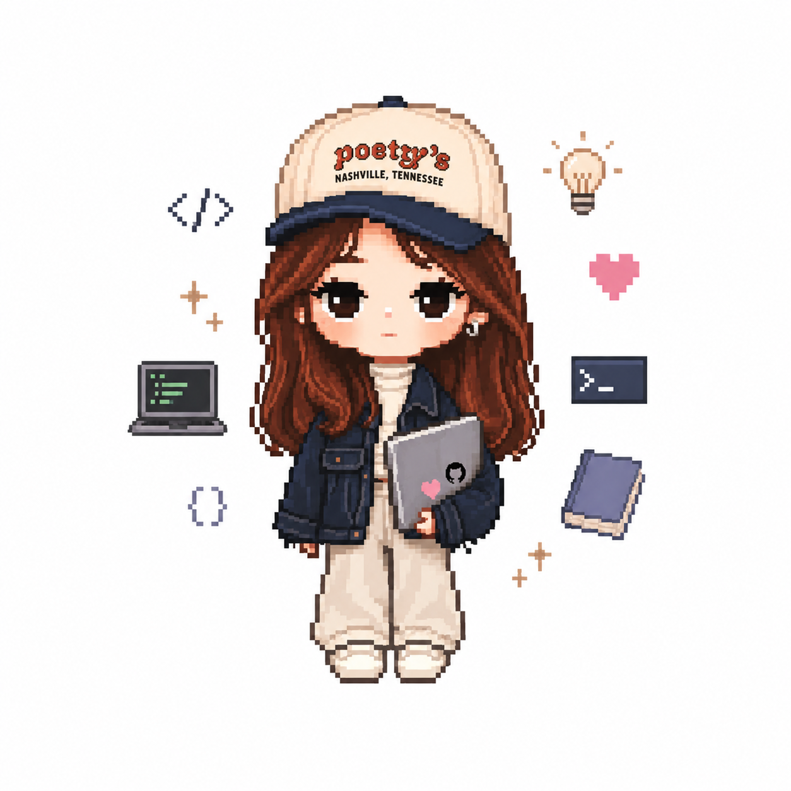

is a product manager, researcher1, and photographer2 passionate about turning curiosity3 into products that people4 genuinely enjoy using.
Most product managers can't write the code. Most engineers can't design the interface. I've done product, engineering, and the photography that tells its story, end to end.
